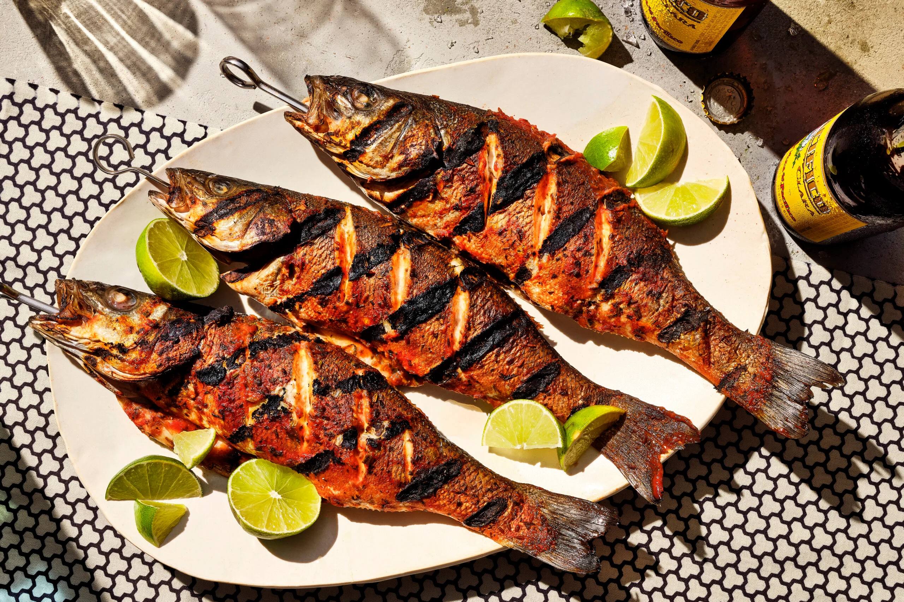

Cooking with direct heat occurs when you cook the meat directly over the heat source. The fish is cooked quickly over medium or high heat coals or over burners set to medium or high heat on a gas grill. Direct heat is used when grilling thinner fillets and steaks. Thin fish will cook quickly when grilled using direct heat. Because they are thin, the direct heat will cook them thoroughly through to the middle.
Back to Home